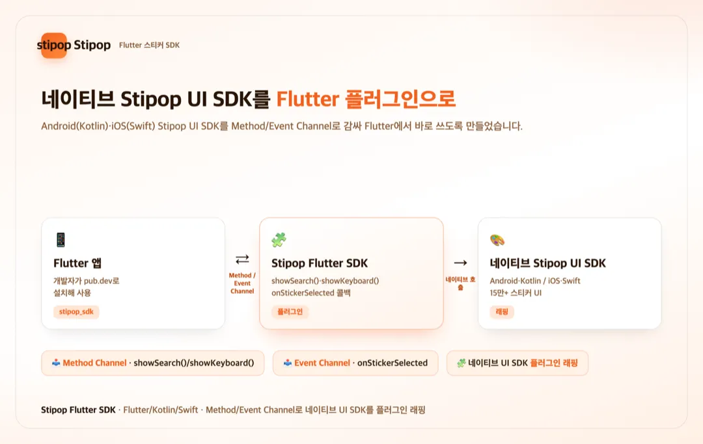
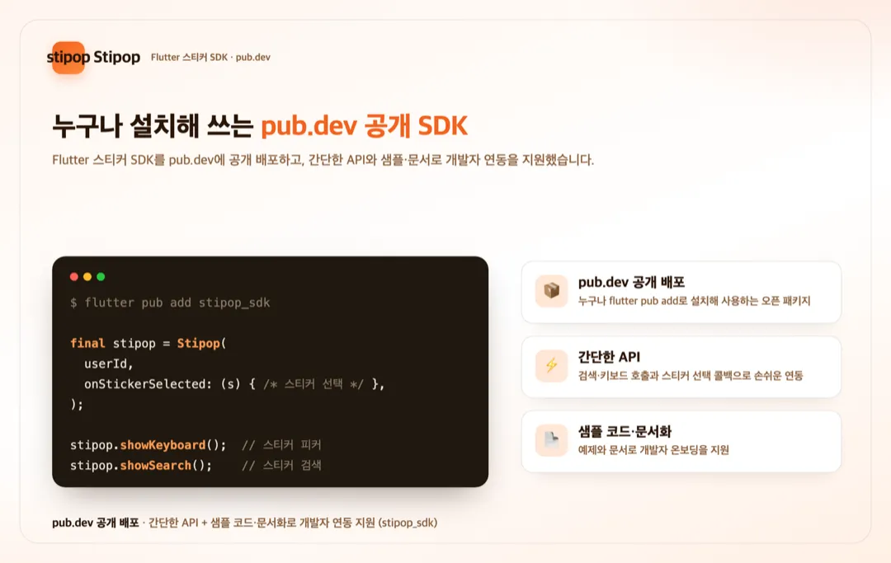

홈 / 포트폴리오 / Stipop — 스티커 Flutter SDK
SDK·플러그인
Stipop 스티커 Flutter SDK 개발 및 pub.dev 공개 배포
참여 기간 · 2021.12


포트폴리오 소개
- 앱에 스티커 기능을 붙일 수 있는 Stipop 서비스의 Flutter SDK를 개발해 pub.dev에 공개 배포한 프로젝트입니다.
- 네이티브(Android Kotlin·iOS Swift) Stipop UI SDK를 Method/Event Channel로 감싸 Flutter 앱에서 바로 쓸 수 있게 만들고, 샘플 코드와 문서로 개발자 연동을 지원했습니다.
작업 범위
- Flutter 플러그인(SDK) 개발
- 네이티브 Stipop UI SDK(Kotlin·Swift) 래핑 및 Method/Event Channel 통신 구현
- 스티커 검색·키보드 호출 API와 선택 콜백 설계
- pub.dev 공개 배포
- 샘플 코드·문서화로 개발자 지원
주요 업무 및 기능
- 래핑: 네이티브 Stipop UI SDK를 Flutter 플러그인으로 병합
- 브릿지: Method Channel(showSearch·showKeyboard 호출) / Event Channel(스티커 선택 이벤트)
- API: 개발자가 쉽게 쓰도록 간단한 호출·콜백 설계
- 배포: pub.dev 공개 배포, 버전 관리
- 지원: 샘플 코드·문서화
주안점
- 네이티브 UI SDK를 Flutter에 안정적으로 통합(Channel 통신)
- 개발자가 몇 줄로 붙일 수 있는 간결한 API
- 공개 배포 품질(문서·샘플·버전)
문제점
- 스티커 기능(네이티브 UI SDK)은 있었지만 Flutter에서 바로 쓸 방법이 없었습니다.
- 네이티브(Kotlin·Swift) 기능을 Flutter와 안정적으로 통신·통합해야 했습니다.
- 외부 개발자가 쉽게 붙이려면 간결한 API와 문서·샘플이 필요했습니다.
프로젝트 목표
- 네이티브 Stipop UI SDK를 Flutter 플러그인으로 래핑.
- Method/Event Channel로 호출·이벤트를 안정적으로 연결.
- pub.dev 공개 배포와 문서·샘플로 개발자 연동을 지원.
주안점
- Channel 통신의 안정성과 이벤트 정합성.
- 몇 줄로 붙는 간결한 API 설계.
- 공개 패키지 품질(문서·샘플·버전 관리).
프로젝트 성과
Flutter 스티커 SDK 개발
네이티브 Stipop UI SDK(Kotlin·Swift)를 Method/Event Channel로 감싸 Flutter 앱에서 바로 쓰는 플러그인으로 개발했습니다.
pub.dev 공개 배포
Flutter SDK(stipop_sdk)를 pub.dev에 공개 배포해, 누구나 flutter pub add로 설치·연동할 수 있게 했습니다.
간결한 API·문서화로 개발자 지원
검색·키보드 호출과 스티커 선택 콜백 등 간단한 API를 설계하고, 샘플 코드·문서로 개발자 온보딩을 지원했습니다.
비슷한 프로젝트를 계획 중이신가요? 아이디어 단계여도 괜찮습니다.
프로젝트 문의하기 →